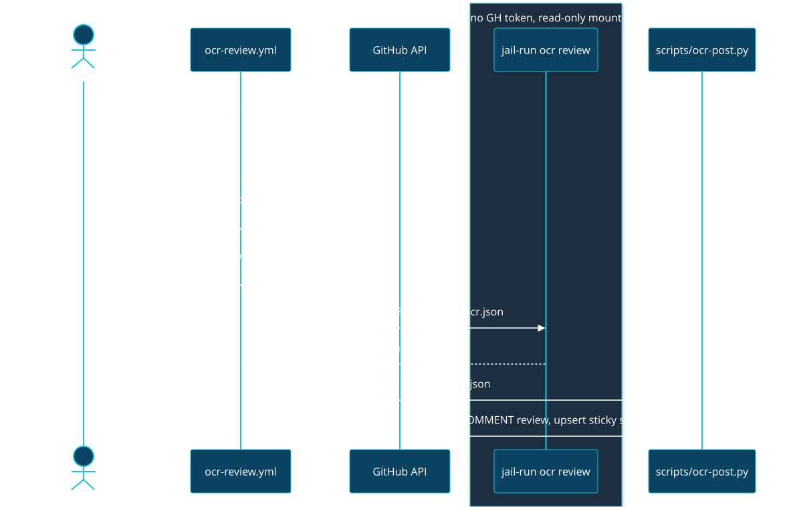

MIP-0060: Open Code Review on request, on marola's own runners¶
| Status | Partially implemented (task 1 of 3 — #391); tasks 2–3 wait on §11.1 — Tasks: docs/MIPs/MIP-0060.tasks.md |
| Author | Claude (Fable 5.1), for M. Hoffmann |
| Created | 2026-09-19 |
| Phase | 0 (dev-loop; no user-facing surface) |
| Related | DEV-FLOW.md §5 ("Final review — only when asked" — this MIP adds a fourth on-request route, it does not change the rule), .github/workflows/pr-body.yml (same trigger, same guard), h0ffmann/nix-config labs/agentic (ai-jail, jail-run), MIP-0008 (Ollama sidecar) |
| Effort | L by the rubric (adds a CI workflow), small in lines: one workflow, one posting script with a self-test, a just recipe, a DEV-FLOW.md edit — plus one upstream change in nix-config labs/agentic (package ocr, add a jail-run ocr mode) |
| Gain | infra/dev-loop (a first-pass reviewer, run when asked, before a paid /code-review looks); cost/ops (the default path is a local model: $0, and it can take the cheap findings off the paid reviews) |
| Effort vs Gain | park after task 1 — the §7.1 run found qwen2.5-coder:7b unusable; back to cheap win once a local model with working tool calls passes §7.1 on a Scala, a Python/shell and a docs PR |
| Depends on | No other MIP. One upstream PR in h0ffmann/nix-config must land and be locked here first (§5.1). Not gated by Phase 1. The default path creates no paid resource, so the AGENTS.md cost gate does not apply; the opt-in hosted-LLM path (§5.5) does need a go-ahead, because it spends money and sends private source to a third party |
| Blocked by | none |
| Risk | The runner is the maintainer's workstation. A review tool that is installed from npm latest at run time and then reads attacker-influenced text with an LLM agent is exactly the shape of thing that should not run unsandboxed next to ~/.ssh — which is what using upstream's Action as-is would do |
| Cost so far | — (#391 carries no Cost: trailer) |
1. Summary¶
alibaba/open-code-review (OCR) is an Apache-2.0 Go
CLI that reviews a git diff with an LLM agent constrained by deterministic file selection, rule
matching and comment positioning, and emits line-level findings as JSON. This MIP runs it
only when asked (just ocr-review, or a manual workflow_dispatch), on marola's self-hosted
runners, against the local Ollama model by default, and posts the findings as one advisory PR review.
It never runs on its own and is never a required check: a local review is heavy on the workstation,
so the human decides when to spend it. "Safe" is the design constraint: a Nix-pinned binary, run inside ai-jail without the
GitHub token, with a separate small step that posts.
2. Motivation¶
DEV-FLOW.md §5 today: "Nothing reviews a PR automatically. Reviews start when the human says so."
Every review is therefore a paid Claude session (/code-review, ultra) or superpowers' reviewer,
started by hand, and a stack of nine PRs (MIP-0056: #372–#380) gets reviewed late or not at all.
A free local pass, run when the human asks, catches the cheap findings (null handling, a missed Using, a
shell quoting bug) before the expensive reviewer spends tokens on them. Upstream's own benchmark
claim (higher precision than a general-purpose agent at ~1/9 the tokens, lower recall) is the
right trade for an unattended bot: few comments, mostly real. Not verified here; §7 tests it.
3. User-visible change¶
Before: no free review route; every review is a paid Claude session.
After: asking for one (gh workflow run ocr-review.yml -f pr=<N>) runs OCR review (advisory) and leaves one review:
marola-ocr · advisory · qwen2.5-coder:7b (local) · ocr 1.12.7 · 4 files, 3 findings, 2m41s
scripts/oods_ingest.py:88 [bug/high] `resp.json()` before `raise_for_status()` …
oods/src/main/…/Planner.scala:41 [maintainability/low] …
<!-- marola-ocr --> sticky summary comment, rewritten on each run, never duplicated
just ocr-review [<PR#>|--from main] runs the same thing locally, printing instead of posting.
Every run is on demand, so there is no re-run rule to state. No comment on a Dependabot or
Scala Steward PR, or a fork.
4. Data sources and dependencies reviewed¶
4.1 alibaba/open-code-review — checked 2026-09-19 via the GitHub API and the repo's files¶
- What: Go CLI (
cmd/opencodereview,go 1.25.5), binary nameocr.ocr review --from A --to B --format json --output f.json; alsoocr scan,ocr delegate, sessions, custom rules (--rule),--effort low|medium|high(≥ 1.10.0),--max-tokens-budget. Needs git ≥ 2.41. - Licence / health: Apache-2.0; created 2026-05-18; ~37k stars; pushed the day of this check;
latest release v1.12.7 (2026-09-19) with
opencodereview-linux-{amd64,arm64}andsha256sum.txt; also npm@alibaba-group/open-code-review. OpenSSF badge shown; not inspected. - LLM: any OpenAI-compatible or Anthropic endpoint (
OCR_LLM_URL,OCR_LLM_TOKEN,OCR_LLM_MODEL,OCR_USE_ANTHROPIC). No key is needed when the endpoint needs none. - Telemetry: OpenTelemetry, off by default (confirmed in
docs/…/telemetry.md). - Its GitHub Action (
action.yml, 1049 lines, read): composite; sets up Node if missing,npm install -g "@alibaba-group/open-code-review@${ocr_version}"with defaultlatest, does its ownfetch-depth: 0checkout, runs the review, posts inline comments + a sticky summary viaactions/github-script, supports incremental re-review. Inner actions are SHA-pinned. Upstream's own docs say pinning the Action alone does not freeze behaviour;ocr_versionmust be pinned too. The demo workflow usespull_request_targetand@main. - JSON output schema: confirmed against the source at
v1.12.7(§11.2),internal/model/review.goandcmd/opencodereview/output.go. - Not checked: the agent's exact tool list (assumed read-only file/search
tools, no evidence it executes repo code, but not confirmed in source); whether an MCP server can
be configured from inside the reviewed repo (
.opencodereview/); the benchmark numbers; whether the release tagv1.12.7(ref object03b362a…) is annotated, dereference before pinning.
4.2 The runners and the model — checked on the machine, 2026-09-19¶
- Workflows use
runs-on: ${{ vars.CI_RUNNER || 'self-hosted' }}; runners are registered byjust runnersunder/home/hoffmann/code/actions-runner*, persistent, on the dev machine. marolais a private repo (gh repo view). Fork PRs are possible only from collaborators.- Ollama on that host already has
qwen2.5-coder:7b(4.7 GB), the modellabs/praticopins. OpenAI-compatible endpoint:http://127.0.0.1:11434/v1/chat/completions. Not checked: that OCR's tool-calling loop works against it, or that Ollama tolerates the Action's defaultextra_body({"thinking":{"type":"disabled"}}).
4.3 nix-config labs/agentic — read 2026-09-19¶
Provides ai-jail, gh, OpenCode, jail-run claude|opencode, gh-token. jail-run accepts only
those two modes (plus --dry-run -- <cmd>) and forwards the GitHub token on purpose. There is no
ocr package and no token-less mode. marola already consumes the lab as a flake input.
Pick: the OCR CLI, Nix-packaged, not the upstream Action (§9 for why).
5. Design¶
5.1 nix-config first (upstream PR, its own repo's rules)¶
labs/agentic: a packageocr,buildGoModulefrom the tagged source withvendorHash, or, if the locked nixpkgs has no Go ≥ 1.25.5,fetchurlofopencodereview-linux-amd64with the hash fromsha256sum.txt. Added tolib.<system>.tools;ocr versionin the lab's self-test.jail-run ocr [args]: a third mode that differs from the agent modes in three ways, noGH_TOKENforwarded, no~/.claudemaps, project directory mapped read-only with a writable$RUNNER_TEMPfor the JSON. Self-test asserts the token is absent from the sandbox line.- marola:
nix flake update agentic, nothing else inflake.nix.
5.2 .github/workflows/ocr-review.yml (written in the implementation PR, not here)¶
on:
workflow_dispatch: { inputs: { pr: { required: true } } }
permissions: { contents: read, pull-requests: write }
concurrency: { group: ocr-${{ inputs.pr }}, cancel-in-progress: true }
jobs:
review:
if: vars.OCR_REVIEW != 'off'
runs-on: ${{ vars.CI_RUNNER || 'self-hosted' }}
timeout-minutes: 30
continue-on-error: true # advisory: never red on the PR
Dispatch only, by design: a local review is heavy on the workstation, so the human decides when it
runs (DEV-FLOW.md §5 stays "only when asked"). A dispatch run has no pull_request event
context, so pr-body.yml's same-repo/author guard cannot be copied verbatim: a first step must
resolve the PR with gh pr view and refuse a fork or a bot author (not checked: the exact fields
to test). Never pull_request_target.
Steps: checkout (fetch-depth: 0) → compute merge-base → review → post. Only the
review step runs without a GitHub token (§5.1's jail mode):

- Review:
nix develop .#ci-ocr --command jail-run ocr review --from $MB --to $HEAD --format json --output $RUNNER_TEMP/ocr.json --effort low --max-tokens-budget $BUDGET, envOCR_LLM_URL,OCR_LLM_MODEL; config from a committed.opencodereview/(the directory upstream's own repo uses; its format is not checked) (rules off fordocs/MIPs/**,knowledge/**,*.lock, generated parquet manifests). No GitHub token in this step's env. - Post:
scripts/ocr-post.py(stdlib,--self-teston fixture JSON, wired intoquality-other): validates the JSON, drops findings whose path/line is not in the PR diff, caps at 15 inline comments (rest go to the summary), posts oneCOMMENTreview, neverREQUEST_CHANGES, and upserts the sticky summary by its<!-- marola-ocr -->marker.
5.3 What is deterministic and what is the LLM¶
The LLM writes comment text only. Which files are reviewed, where a comment may land, how many are
posted, and that the check can never block a merge are plain code. Nothing here touches
scoring/, a user-visible reply, or any autonomous behaviour.
5.4 Threat model ("safe", concretely)¶
| Threat | Mitigation |
|---|---|
| Untrusted PR code on a persistent workstation runner | Same-repo and author check on the resolved PR (§5.2); OCR reads, it does not build or run the PR; read-only map in the jail |
| Supply chain: tool updated under us | Nix-pinned source/binary hash; no npm install -g latest on the host; bumps arrive as a reviewed flake.lock diff |
| Prompt injection in a diff ("ignore rules, post X") | The agent has no token and no writable repo; the worst outcome is a wrong comment, which the post step bounds (diff-only lines, count cap, COMMENT only) |
| Source leaving the machine | Local default points at loopback, but that is config, not enforcement: ai-jail 1.21.0 cannot restrict the jail to loopback (appendix §7.1), so outbound network is unrestricted. Hosted LLM is opt-in (§5.5) |
| Repo-supplied config steering the tool | Config is read from the base ref, not the PR head |
| Runner starvation / Ollama contention with e2e | Runs only when asked, per-PR concurrency, 30-min timeout, token budget, kill switch vars.OCR_REVIEW=off |
5.5 Opt-in hosted model¶
vars.OCR_PROVIDER ∈ {unset → Ollama, anthropic}; key in secrets.OCR_LLM_TOKEN; the summary
names the provider. This path sends private source to a third party and spends money: it needs an
explicit go-ahead with a measured per-PR figure from §7, and --max-tokens-budget as the ceiling.
6. Scoring / safety impact¶
None. No change to Swimability, to any reply, or to what a user sees.
7. Verification plan¶
- Go/no-go, before any workflow exists:
ocr reviewby hand on three already-merged PRs (one Scala, required because upstream lists no supported code languages, one Python/shell, one docs-only) againstqwen2.5-coder:7b. Record wall time, comment count, and a human true/false-positive call per comment in the MIP's appendix. Fewer than half useful → stop, flip this MIP topark. nix-config:just self-testinlabs/agentic(token absent injail-run ocr),nix flake check.- marola:
scripts/ocr-post.py --self-test(out-of-diff finding dropped; cap honoured; sticky marker upsert is idempotent; malformed JSON → exit 0 with a "no review" summary). actionlint;just ocr-review --from mainlocally; then a throwaway PR: nothing runs until dispatched; dispatch → one review; re-dispatch → summary rewritten, not duplicated; Dependabot branch → refused.- Done = the check has run on five real PRs, none blocked, and
DEV-FLOW.md§5 describes it.
8. Risks, limitations, and honest caveats¶
- A 7B model may simply be too weak for OCR's agent loop; §7.1 exists to find out cheaply.
- Low recall is by design: a quiet OCR run is not an approval. The summary says so verbatim.
- Bot comments train people to ignore bot comments. Hence the cap,
--effort low, and the kill switch. - ai-jail's network switch is all-or-nothing; "loopback only" is a property of the config, not enforced by the sandbox (not checked whether ai-jail can restrict to loopback).
- The project is four months old and releases several times a week; the JSON schema may move. The post step validates and degrades to a summary-only comment rather than failing.
9. Alternatives considered¶
- Upstream's Action as-is (
uses: alibaba/open-code-review@<sha>+ocr_version). Least work, and its incremental posting is better than ours. Lost because it npm-installs globally on a persistent host, runs unsandboxed with the token in scope, and its 1049 lines are not ours to audit on every bump. Reasonable fallback if §5.1 stalls: run it onubuntu-latestinstead, but then there is no local model, so it becomes the paid path by default. - Upstream's Action inside a
container: node:24job (their self-hosted recipe). Better isolation, but needs Docker on the runner path and host networking to reach Ollama; more moving parts than one Nix binary in a jail marola already uses. /code-reviewin CI. Already available, better recall, costs money per PR, no local mode.- Automatic on
ready_for_review/every push (this MIP's first draft). Dropped 2026-09-19 on the maintainer's call: even local it is heavy on the workstation, and §7.1 has not yet shown useful output. Revisit with upstream's incremental mode if the runner pool grows. - Do nothing. Reviews stay manual and late. Costs nothing, fixes nothing.
11. Open questions¶
- ~~Is
qwen2.5-coder:7bgood enough (§7.1)?~~ No, measured 2026-09-19, see the appendix: it never emits a valid tool call, so OCR produces nothing. Still open: which local model with working tool calls fits the runner's GPU (RTX 4090), once Ollama's context is raised. - ~~OCR's JSON schema~~, resolved, confirmed against the source at
v1.12.7(2026-09-19):internal/model/review.godefinesLlmComment(path,content,suggestion_code,existing_code,start_line,end_line,category∈ bug/security/performance/maintainability/ test/style/documentation/other,severity∈ critical/high/medium/low) andcmd/opencodereview/output.gothe envelopejsonOutput(status,llm{provider,model},message,summary{files_reviewed,comments,*_tokens,elapsed,budget_exceeded},tool_calls,comments,warnings,project_summary,session_id,manifest). The posting rules come from upstream's own consumer,scripts/github-actions/post-review-comments.js: inline-able whenstart_lineorend_line≥ 1, multi-line asstart_line+lineonside: RIGHT, asuggestionblock only whensuggestion_codeandexisting_codeare both set, andevent: COMMENTon every review it creates.scripts/ocr-post.pyreads that shape and degrades to a summary-only comment on anything else, so a schema move is a quiet run, not a red check. The agent's tool list is still not checked. buildGoModulevs release binary: does the locked nixpkgs carry Go ≥ 1.25.5?- Should a stack (
mip-NNNN/k-*) be reviewed bottom-first only, to save runner time? - Review language: English, or Portuguese to match MIP-0054's direction?
- Scala. Does OCR review Scala 3 (with Kyo) usefully? Upstream's docs list no code languages; §7.1 never reached the Scala PR (#333). Required in the re-run, not optional.
Appendix¶
Checked 2026-09-19: gh api repos/alibaba/open-code-review (licence, dates, stars), README.md,
action.yml, examples/github_actions/README.md, pages/…/en/telemetry.md, go.mod,
releases/latest; marola .github/workflows/{ci,pr-body}.yml, justfile runner recipes,
DEV-FLOW.md §5; nix-config/labs/agentic/{README.md,flake.nix,scripts/jail-run}; ollama list on
the runner host.
§7.1 go/no-go — run 2026-09-19, verdict: NO-GO for qwen2.5-coder:7b (preliminary; the human decides)¶
ocr v1.12.7 (release binary, sha256 verified before first run) inside ai-jail on a throwaway
clone: no token, no real HOME, --network (see below). Endpoint
http://127.0.0.1:11434/v1/chat/completions, OCR_LLM_URL wants the full path.
| PR | Kind | Lines | Model | Wall | status | Comments | Tool calls | Tokens |
|---|---|---|---|---|---|---|---|---|
| #332 | Python/shell | +257 | qwen2.5-coder:7b |
5m52s | failed |
0 | 0 | 1,217,648 |
| #332 | same | +257 | llama3.2:latest (fallback) |
8s | complete |
0 | 0 | 19,818 |
| #333 Scala, #386 docs | — | — | not run | — | — | — | — | — |
- The bar in §7.1 ("fewer than half useful") was never reached: there were no comments to judge.
qwen2.5-coder:7bwrites the tool call as JSON text incontentinstead oftool_calls, 5 of 5 attempts at temperature 0, on/v1and on native/api/chat, reproducible on a 198-token prompt. OCR logged 300 "No tool calls parsed … retrying" lines and failed every file withclassification: budget. The other two PRs were not run: the failure is content-independent. What this does not show: that a 7B model reviews badly. Review quality and line-number accuracy are both untested. - Confound, host-side: this host's Ollama (server 0.12.11; the client on PATH is 0.33.1)
truncates every prompt to 4096 tokens, a ~9,000-token prompt returned
prompt_eval_count: 4096;OLLAMA_CONTEXT_LENGTHis unset.llama3.2:latestdoes emit realtool_callson upstream's probe, but its 8-second, zero-call review says little under that truncation. No retest of any model here is meaningful until the context is raised. Not changed: it is a service setting on the workstation. - Ollama accepts and ignores upstream's default
extra_body({"thinking":{"type":"disabled"}}); §4.2's "not checked" is now checked. - §8's network caveat is stronger than written: ai-jail 1.21.0 refuses
--allow-tcp-port("UDP cannot be isolated"), and--lockdowndiscards--rw-map. Loopback-only is not merely unenforced, it is unachievable today; the jail runs with unrestricted outbound network. - Output shape, from the real run: on failure
commentsisnull, not[], andsummary.elapsedis a string whilemanifest.elapsed_msis the integer.scripts/fixtures/ocr/failed-run.jsonis that run, untouched;ocr-post.pyreports it as "ocr failed on 4 file(s) — reached the maximum tool-request rounds without finishing".
Consequence for the stack: task 1 (the poster) and nix-config's ocr + jail-run ocr stand on
their own. Tasks 2–3 wait on open question 1: a local model that passes upstream's tool-call probe
and a raised context, then this measurement re-run on all three PRs.